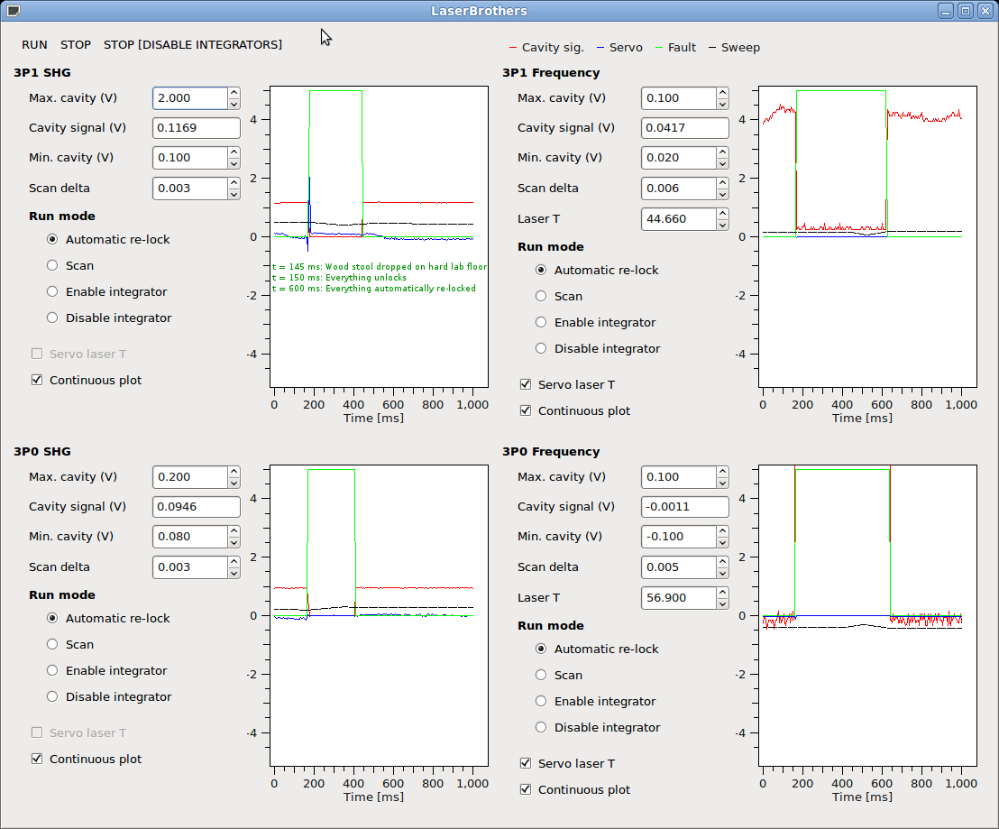

LaserBrothers is software to automatically re-lock lasers and resonant cavities, e.g. lock lasers to Fabry-Perot reference cavities or resonant doubling cavities to lasers. The software performs only minimal feedback. It's main function is to control the integrator of a separate feedback controller, and re-acquire lock when the signal is disrupted. A GUI shows the laser status, real-time signals, and allows adjustment of parameters. Other configuration options are specified in a text file.
1. Automated adjustment of laser-temperature via RS232 commands to keep it within the center of the PZT tuning range. [Currently supported laser: NP Photonics fiber lasers]
2. Automated adjustment of waveplate angles to optimize the polarization of light coming out of optical fibers and maximize the cavity signal. The optimization currently relies on GSL's implementation of the Nelder-Mead method. Other optimization strategies are being explored. [Currently supported hardware: Newport Agilis rotation stages]
USB-DUX-D (Linux) and NI USB-6008 (Windows) low-speed USB analog/digital IO devices have been tested to work. The USB-6008 devices can control two lockers. They time-out occasionally and the software must be restarted. The USB-DUX-D devices can control four lockers and typically run without errors.
This should work for any loop filter whose integrator can be disabled with a digital signal.
The HV amplifier should have an auxiliary sweep input that allows separate adjustments from the main loop-filter signal. In principle this could be a simple two-resistor summing circuit.
Connect the CAVITY MONITOR signal to an ADC channel.If the CAVITY MONITOR is between the min and max range from the GUI, the status switches to LOCKED. Then the digital output (WINDOW in) goes low to enable the loop filter integrator. The SWEEP signal gets adjusted slowly to drive LOOP FILTER MONITOR towards zero. If "Set temperature" is enabled in the GUI, and a temperature-tunable laser is connected, its temperature gets adjusted slowly via RS232 commands to drive SWEEP towards zero.
If the CAVITY MONITOR is not between the min and max range from the GUI, the status switches to ACQUIRE. Then the digital (WINDOW in) goes high to disable the loop filter integrator. The SWEEP signal gets swept slowly in a search pattern. When the CAVITY MONITOR is within the window range, the status switches to locked, and the loop-filter integrator is enabled.
sudo dpkg -i laserbrothers.deb
laserbrothers
./install
LaserBrothers
Press "RUN"At about t=150 ms a wood stool is dropped on the hard lab floor. This unlocks everything, and around t=600 ms the software has re-locked the lasers. Note that the frequency locks depend on the second-harmonic generator (SHG) locks, and only start re-acquiring at about t=450 ms, after the SHG servos have re-acquired lock. Click for larger image.
This software was developed at the National Institute of Standards and Technology (NIST) by employees of the Federal Government in the course of their official duties. Pursuant to title 17 Section 105 of the United States Code, this software is not subject to copyright protection and is in the public domain. NIST assumes no responsibility whatsoever for its use by other parties, and makes no guarantees, expressed or implied, about its quality, reliability, or any other characteristic.
{kind=link}